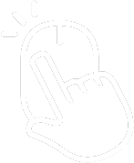

Hello. I am Front End Developer
based in
Toronto, ON Canada.
Welcome to my PORTFOLIO.
Honestly, I have felt overwhelm to think what to do for my life since I graduated college. Fortunately, I could find my true passion which is web development. But, web development is not something related to my major, Business Marketing. I am not afford to go back to school for that, so I learn most of them myself from online course,books, any kind of resources I could find, and I think that’s the best way. I am still learning and enjoying learning new things everyday. Recently, I realized that I would learn more from real work experience and I decide to look for a job as web developer. I am aware that I don’t need to wait for the perfect moment to start doing something I really like. This site is showing some pieces of what I can do.
 Click to Enter Explore to my portfolio